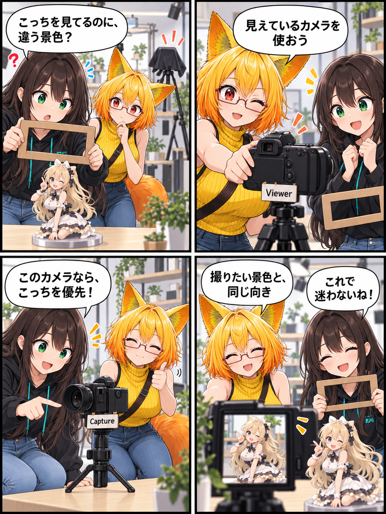

見えている景色で、撮ろう。撮影カメラの参照をそろえた日
撮影で使うカメラは、画面で見ているカメラと同じであってほしいものです。VRASでは、デスクトップの撮影・構図・アバター追従が、実際に見えているカメラを参照するよう選択規則を整理しました。

見えているカメラを、撮影の基準に
これまでデスクトップの通常操作では、ユーザーに見えていないMCP用Photo Cameraが参照先になる場面がありました。今回、通常のデスクトップではViewer Cameraを使うように選択をそろえました。撮影、画角、状態表示だけでなく、アバターの視線・顔追従や変形操作も、同じユーザー向けCapture Cameraを参照します。
独立カメラが見えているときは、そちらを優先
物理カメラを表示している場合は、そのCapture Cameraを優先します。つまり、通常はViewer Camera、独立した物理カメラを使っているときはそのカメラという、画面上の体験に沿った選択です。VRで独立カメラがない場合だけ、従来のPhoto Cameraへフォールバックします。
選択規則を、3つの条件で確認
回帰テストには、デスクトップで物理カメラがない場合に可視Viewer Cameraを使うこと、物理カメラがある場合にそれを使うこと、VRで独立カメラがない場合にPhoto Cameraを使うことを追加しました。ここで記しているのは期間内のコミット済みコードとテストコードの内容であり、日記制作中にUnity実行、VR実機、撮影結果の実測は行っていません。
ほかにも進んだこと
同じ期間には、ビルド時のShader登録とPlayerログ出力の最適化、PhysBone互換処理と回帰検証、VR起動バッチの現行exe名対応、描画プロファイル比較QAなども進みました。今回は、撮影体験に直結して伝えやすいカメラ参照の整理を主題にしています。
4コマの裏話
段ボールのフレームとカメラ小道具で、「見ている景色」と「使うカメラ」を同じ方向へ向ける話にしました。画面やアプリ操作の再現ではなく、選択規則を表すための小さな寸劇です。
まとめ
撮影の操作、構図、アバター追従が実際に見えているカメラを共有することで、ユーザーが意図した景色と処理の参照先がそろいます。独立カメラとVR時のフォールバックも含め、選択規則を明確にしました。
本日のひとこと
撮りたい景色を、ちゃんと見ているところから。